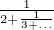

1If we attempt to define the CF 1 +  with partial denominators being 1,2,3,4,... in a similar way, we run into the issue of defining the seed. This is why it is generally accepted to truncate the fraction from the top rather than the bottom. However, truncating from the top makes the recursive definition of the limiting process complicated. In the example above, the self similarity results in both truncations being identical, which saves us a lot of work.